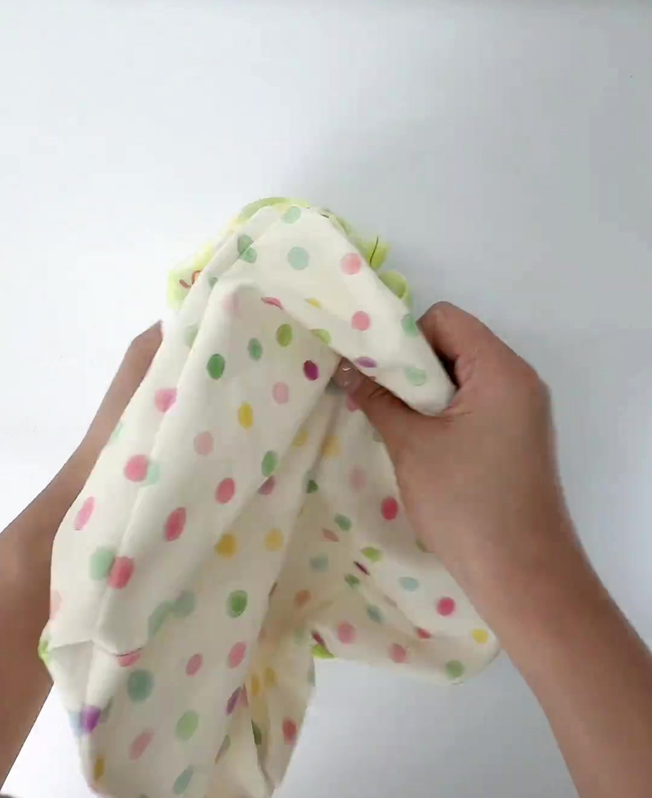
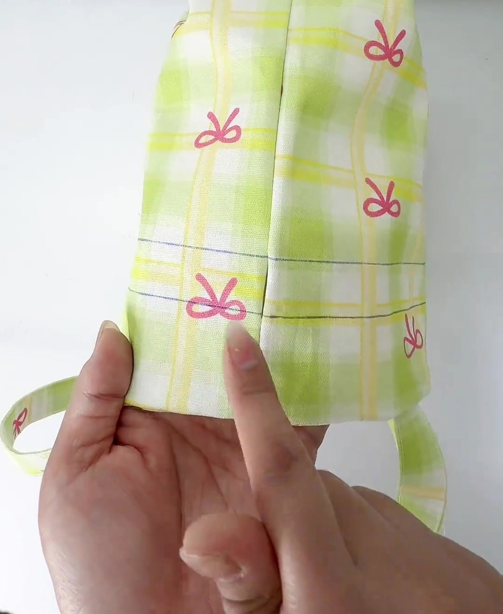
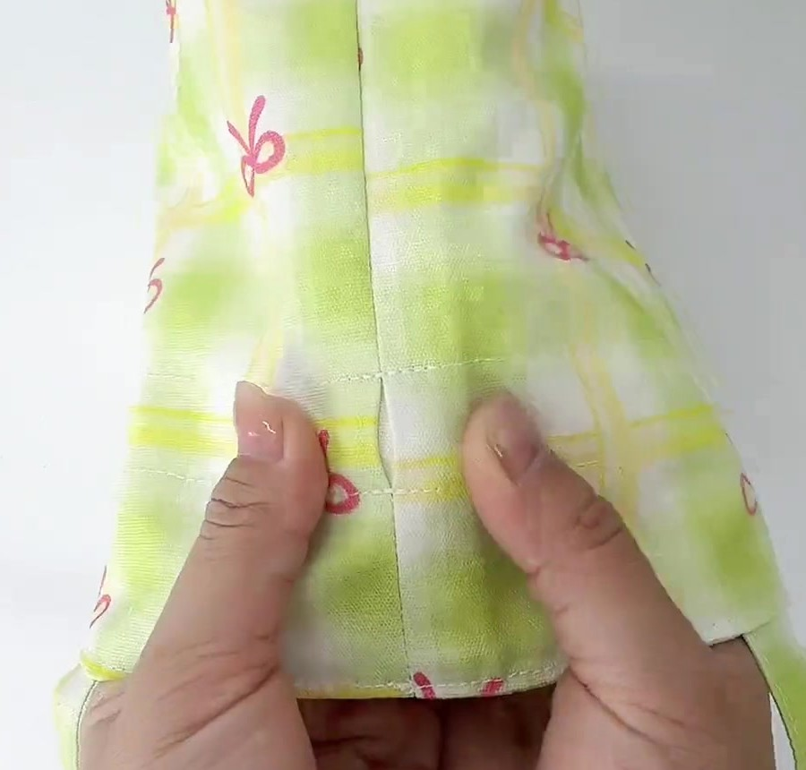
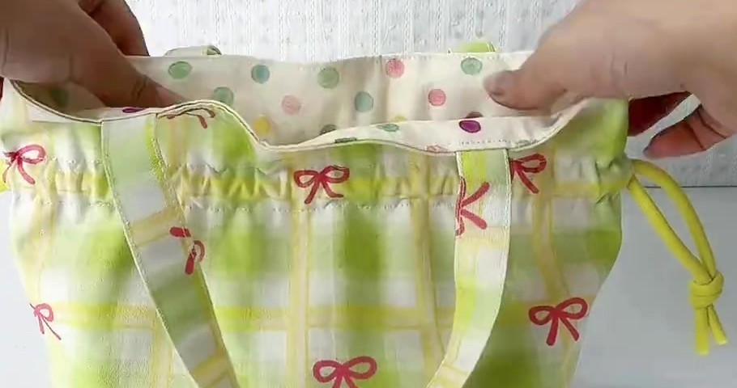

Diễu (đường may lộ ra ngoài) 3 vòng quanh miệng: 1 giữ mép phẳng; 23 tạo kênh dây 2 cm.
A 3 đường diễu nhìn từ mặt ngoài. B khe dây 2 cm ở cả 2 sườn nằm gọn giữa 2 và 3. C mặt cắt (độ dày phóng đại): 1 may xuyên ngoài, lót và 2 mép chừa (ở chân quai kẹp cả đầu quai); 23 may dính ngoài với lót thành ống 2 cm chứa 2 lượt dây. Mép chừa nằm kín giữa 2 lớp nên không cần vắt sổ. Nét đứt hồng: đường diễu · tím: vạch bút bay màu · vàng: khe dây.
Nhét lót vào trong & ủi miệng
Nhét lót vào trong, 4 góc đáy lót khớp 4 góc đáy ngoài, để đường diễu không nhăn.
Vê mép miệng: lăn đường may ra đúng mép, hoặc để lót lùi vào 1 mm. Nhìn từ ngoài không thấy chấm bi là đạt.
Ủi phẳng, kẹp 6–8 kẹp. Đường sườn ngoài trùng đường sườn lót.
Soát vạch A, B: giờ cách miệng 4 cm và 6 cm (miệng đã “ăn” 1 cm đường may). Vạch mờ thì kẻ lại theo 2 số này.
May 3 đường, mặt ngoài quay lên
mũi 3 mmchỉ trùng màu nềnkim 90/14
Tháo bàn may rời (nếu có), lồng miệng túi vào tay máy. Cứ khoảng 10 cm dừng, vuốt phẳng lót.
Đường 1 may mí 0,2–0,3 cm. Qua chân quai (8 lớp) may chậm: khóa luôn đầu quai.
Đường 2 rồi 3 theo vạch tím, hoặc tì mép miệng vào băng keo dán cách kim 4 / 6 cm.
Mỗi đường bắt đầu ở mặt sau, sát sườn; hết vòng chồng 1–2 cm, lại mũi.

Video 0:42Nhét lót vào trong.

Video 0:452 vạch kẻ, khe ở đường sườn.

Video 0:46Diễu xong: khe giữa 23.

Video 0:02May mí miệng và 2 cạnh quai.
Kiểm tra trước khi luồn dây
3 đường song song, đều nhau.
Kênh 2 cm; khe 2 bên mở thông.
Lót phẳng, không lòi lên miệng.
Kéo thử quai: chân quai chắc.
Lỗi dễ mắc
Diễu lệch vạch: khe ló ra ngoài kênh hoặc bị may dính. Tới khe, may chậm, giữ khe nằm giữa 2 và 3.
Trong video
Phụ đề 0:44: “lần lượt may diễu 3 đường”. Bản cũ chỉ ghi 2 đường, thiếu đường may mí sát miệng.
Túi dây rút có quai · Hướng dẫn dễ hiểu
Bước 9 May · Luồn dây & thắt nút
Luồn 2 dây rút & thắt nút
Mỗi dây chạy trọn 1 vòng kênh (56 cm) rồi ra lại đúng khe nó đi vào.
Nhìn từ trên xuống miệng túi (sơ đồ, không theo tỉ lệ; kênh vẽ phóng to thành vòng ống). Thực tế 2 dây cùng màu vàng, vẽ khác màu để dễ phân biệt.
Luồn dây 1 theo 5 bước
2 dây × 80 cm = 56 + 2 × 12kim băng
Vào khe TRÁI (gắn kim băng, hình a).
Chạy hết kênh mặt trước.
Qua khe PHẢI, không chui ra.
Chạy hết kênh mặt sau.
Ra lại khe TRÁI, 2 đầu bằng nhau.
Dây 2
Làm y hệt nhưng vào và ra ở khe PHẢI. Mỗi bên có 2 đầu dây.
a · Gắn đầu dây vào kim băng
Que luồn: xỏ dây qua lỗ que. Kẹp đuôi dây ngoài khe cho khỏi tuột.
b · Đẩy kim, vuốt vải nhún lại
Tới khe bên kia: chặn khe bằng ngón tay, đẩy kim trượt qua.